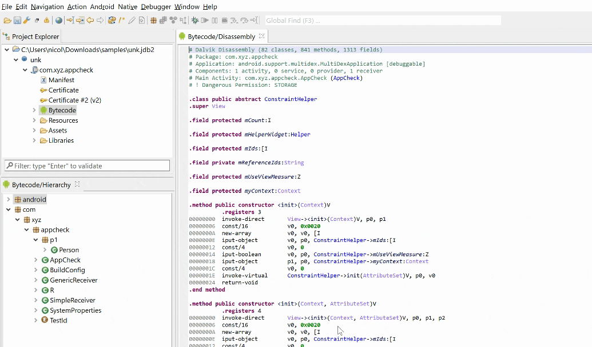

Common analysis actions are located in the Action menu. They include decompiling, renaming items, viewing cross-references, adding comments, etc. Other actions, specific to a given class of files or analysis, are located in other menus (e.g. Android, Native, Debugger).
